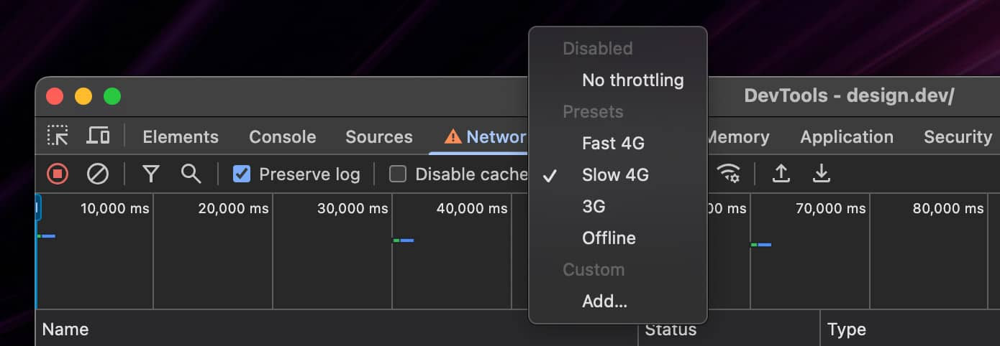

O DevTools do Chrome é uma ferramenta poderosa para desenvolvedores front-end, e uma de suas funcionalidades mais
úteis é a capacidade de simular diferentes condições de rede. Isso é especialmente útil para testar como seu
site ou aplicativo se comporta em conexões lentas, como 3G ou 4G lento. Vamos ver como fazer isso passo a passo.

Passo a Passo para Simular Condições de Rede
- Clique com o botão direito em qualquer lugar da página e selecione "Inspecionar".
- Ou pressione:
- Windows/Linux:
Ctrl + Shift + I ou F12.
- Mac:
Cmd + Option + I.
2. Vá para a Aba "Rede" (Network)
- No painel do DevTools, clique na aba "Rede" (Network).
3. Ative o Throttling
- No topo do painel "Rede", localize o menu suspenso "Throttling" (ou
"Limitação de rede").
- Clique no menu e selecione uma das opções pré-definidas:
- Online: Sem limitação (conexão rápida).
- Fast 3G: Simula uma conexão 3G rápida.
- Slow 3G: Simula uma conexão 3G lenta.
- Fast 4G: Simula uma conexão 4G rápida.
- Slow 4G: Simula uma conexão 4G lenta.
- Offline: Simula uma conexão offline.
- Para criar uma configuração personalizada, selecione "Custom" e defina os valores
de:
- Download: Velocidade de download (em kilobits por segundo).
- Upload: Velocidade de upload (em kilobits por segundo).
- Latência: Tempo de resposta (em milissegundos).
Exemplo de Uso
Testando um Site em Conexão Lenta
- Abra o DevTools e vá para a aba "Rede".
- Selecione "Slow 3G" no menu de Throttling.
- Recarregue a página (
F5 ou Cmd/Ctrl + R).
- Observe como o site carrega em uma conexão lenta. Isso pode ajudar a identificar problemas de desempenho ou
otimizações necessárias.
Benefícios de Simular Condições de Rede
-
Teste de Desempenho:
- Verifique como seu site se comporta em conexões lentas.
- Identifique recursos que podem estar causando lentidão (imagens grandes, scripts pesados, etc.).
-
Melhoria da Experiência do Usuário:
- Garanta que seu site seja utilizável mesmo em condições de rede ruins.
- Teste estratégias como carregamento lento (lazy loading) ou otimização de imagens.
-
Depuração:
- Descubra se problemas de carregamento estão relacionados à rede.
Dicas Adicionais
-
Combine com Outras Ferramentas:
- Use a aba "Lighthouse" no DevTools para gerar relatórios de desempenho,
acessibilidade e SEO.
- Combine o Throttling com a ferramenta "Performance" para analisar o
carregamento do site em detalhes.
-
Teste em Diferentes Dispositivos:
- Use a ferramenta "Design Responsivo" (ícone de celular/tablet no
DevTools) para testar o site em diferentes tamanhos de tela e condições de rede.
-
Automatize Testes:
- Use ferramentas como WebPageTest ou Lighthouse CI para automatizar
testes de desempenho em diferentes condições de rede.
Exemplo de Configuração Personalizada
Se você quiser simular uma conexão muito lenta (por exemplo, 2G), pode criar uma configuração personalizada:
- Download: 50 Kbps.
- Upload: 20 Kbps.
- Latência: 500 ms.
Isso ajudará a testar como seu site se comporta em condições extremas.
Conclusão
Simular condições de rede no DevTools do Chrome é uma maneira eficaz de garantir que seu site ou aplicativo
funcione bem em qualquer cenário. Use essa funcionalidade para identificar e corrigir problemas de desempenho,
melhorar a experiência do usuário e garantir que seu site seja acessível para todos, independentemente da
qualidade da conexão.